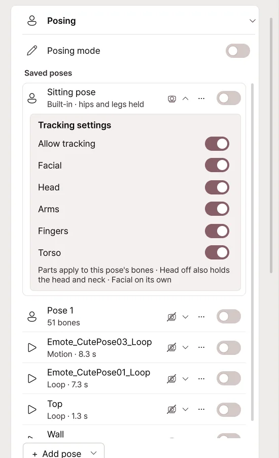
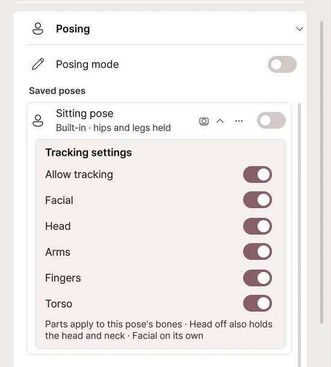
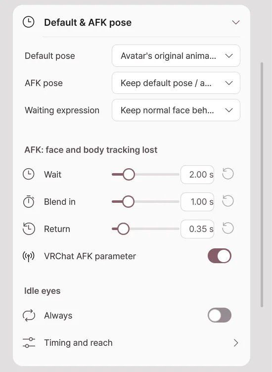
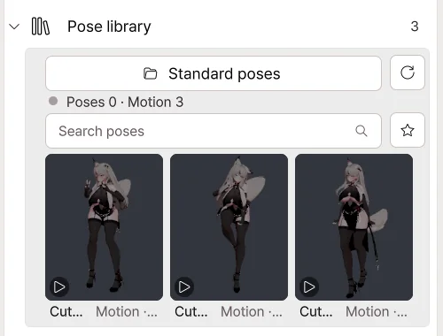
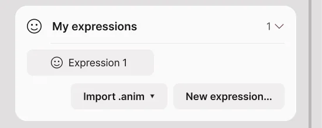
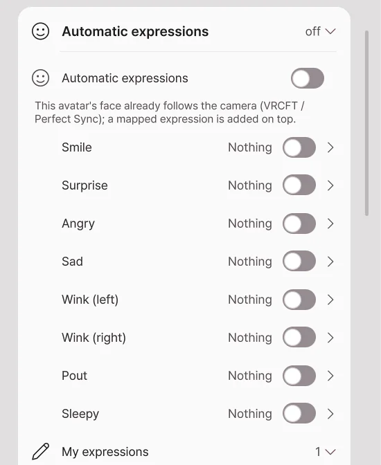

Posing and Facial Expressions
Create the posture to save, and connect the expressions to buttons or tracking input. Posing, pose libraries, and objects are available in Pro, while My Expressions and Auto Expressions can be used in both Basic and Pro.
Posing

- In the Studio → Pose, turn on Pose Mode.
- Select a bone and drag the rotation ring or move the hands and feet.
- Press Complete to save the posture.
- Apply it in the detail card of the avatar menu.
| Operation·Button | Result |
|---|---|
| Bone Selection·Rotation | Changes the direction of the selected joint. |
| Hand and foot drag | Move the end point so that the arms or legs follow. |
| Alt+Drag | Changes the direction the elbows and knees are facing. |
| Symmetric Editing | Changes the other side as well. |
| Flip Left/Right | Changes the left and right sides of the pose. |
| Fixed | Prevents the selected bone from moving during tracking and animation. |
| Stick to the floor | Place your feet on the floor. |
| Complete | Save the created pose. |
| Discard | Exit without applying the edited posture. |
Tracking by Posture

Press the side posture camera button to turn on and off the face, head, arms, fingers, and torso individually.
- Lit area: Follows my movement.
- Extinguished area: Maintain the stored position.
- Example: Turn off your arms and turn on your hair or facial; maintain your arm pose while moving your head and expression.
Basic Stance and Ready Position

| Select | When using |
|---|---|
| Basic Posture | This is the standard posture for areas that are not usually tracked. |
| AFK Waiting Stance | This is the stance to use when you lose the trail. |
| Idle Expression | The expression that will be automatically applied while AFK. |
| Desk posture | This is the arm and hand posture to use when your hands are not visible on the camera. |
The time to transition to the idle position is adjusted in Action → When Tracking is Lost.
Pose Library

- Studio → Posing → Open the Pose Library.
- Select the folder that contains the
.animfile. - Select a pose thumbnail and apply it.
- Press Cancel to go back.
You can find frequently used poses through search and favorites, and correct and save them in posing mode through editing.
Object
Studio → Room and Props to check the placement method. You can use text, images, shapes, and .vprop 3D models.
My Expressions

- Click 'Create New Expression.'
- Move the face's shape keys to create an expression.
- Check from 0% neutral to 100% expression with the preview intensity.
- Save it.
- Click your expression tile to apply it.
You can also add Unity expression animations by importing .anim files. The moving file changes expressions over time, and whether it loops depends on the file settings.
Auto Expressions

Turn it on in Actions → Auto Expressions. Connect the expressions saved in My Expressions to each detectable expression such as smile, surprise, or wink. Then, when you actually smile or are surprised, the connected expression will automatically appear.